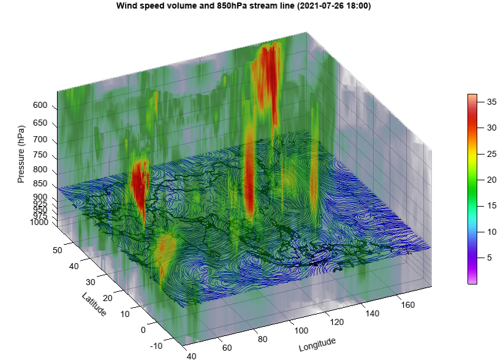

volumeplot¶
-
Axes3DGL.volumeplot(*args, **kwargs): creates a three-dimensional volume plot
- Parameters
x – (array_like) Optional. X coordinate array.
y – (array_like) Optional. Y coordinate array.
z – (array_like) Optional. Z coordinate array.
data – (array_like) 3D data array.
cmap – (string) Color map string.
vmin – (float) Minimum value for particle plotting.
vmax – (float) Maximum value for particle plotting.
alpha_min – (float) Minimum alpha value.
alpha_max – (float) Maximum alpha value.
- Returns
Volumeplot graphic
Example of 3D volume plot
fn = 'D:/Temp/image/sagittal.png' data1 = imagelib.imread(fn) data1 = data1[:,:,0] data1 = data1.reshape(88,300,600) data = zeros([176,300,300], dtype='int') data[:88] = data1[::-1,:,:300] data[88:] = data1[::-1,:,300:] data = data.swapaxes(0, 1) ax = axes3d(clip_plane=False) ax.set_draw_box(False) grid(False) volumeplot(data, cmap='NCV_bright')
3D volume plot of temperature from numerical forecasting model of GRAPES
print('Read data...') fn = 'D:/Temp/grib/grapes/rmf.tcgra.2021072500042.grb2' f = addfile(fn) tidx = 0 tt = f.gettime(tidx) ss = 5 u = f['u-component_of_wind_isobaric'][tidx,::-1,::-ss,::ss] v = f['v-component_of_wind_isobaric'][tidx,::-1,::-ss,::ss] w = f['Vertical_velocity_geometric_isobaric'][tidx,::-1,::-ss,::ss] u = u[:12] v = v[:12] w = w[:12] speed = sqrt(u*u + v*v + w*w) levels = u.dimvalue(0) lat = u.dimvalue(1) lon = v.dimvalue(2) height = meteolib.pressure_to_height_std(levels * 0.01) print('Plot...') axes3d() geoshow('country', edgecolor='k', edgesize=2, offset=height[5]) ss = 2 streamslice(lon[::ss], lat[::ss], height, u[:,::ss,::ss], v[:,::ss,::ss], w[:,::ss,::ss], zslice=[height[5]], color='b', density=2, interval=10, headwidth=0.2) volumeplot(lon, lat, height, speed, cmap='NCV_bright') colorbar(aspect=30) zticks(height, (levels / 100).astype('int')) xlabel('Longitude') ylabel('Latitude') zlabel('Pressure (hPa)') xlim(lon[0], lon[-1]) ylim(lat[0], lat[-1]) title('Wind speed volume and 850hPa stream line ({})'.format(tt.strftime('%Y-%m-%d %H:00')))